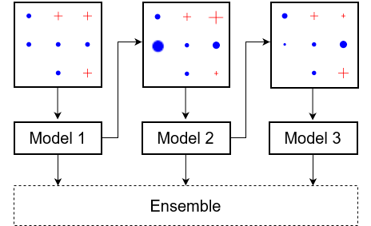

# Überblick
Auf dieser Seite finden Sie begleitende Materialien zur Lehrprobe zum Thema Boosting und den Zugriff auf die Folien dieses und weiterer Vorträge.
Über Ihr Feedback zu den bereitgestellten Materialien würde ich mich sehr freuen. Hierfür steht Ihnen am Ende eines jeden Beitrags eine Kommentarsektion zur Verfügung. Alternativ können Sie mir gerne eine [E-Mail](mailto:a.dockhorn@qmul.ac.uk) zukommen lassen.
Diese Website begleitet meine Bewerbung an der Universität Rostock und ist daher thematisch begrenzt. Auf meiner **[privaten Homepage](https://adockhorn.github.io/)** finden Sie weitere Informationen zu mir und meiner aktuellen Forschung.

# Vorträge
# Weitere Materialien